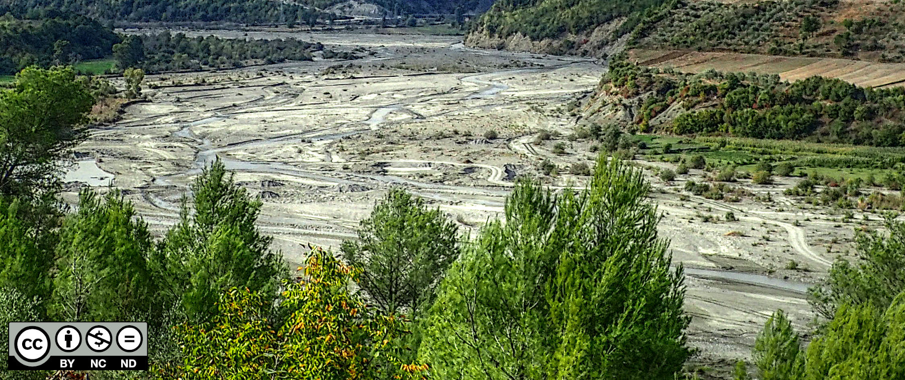
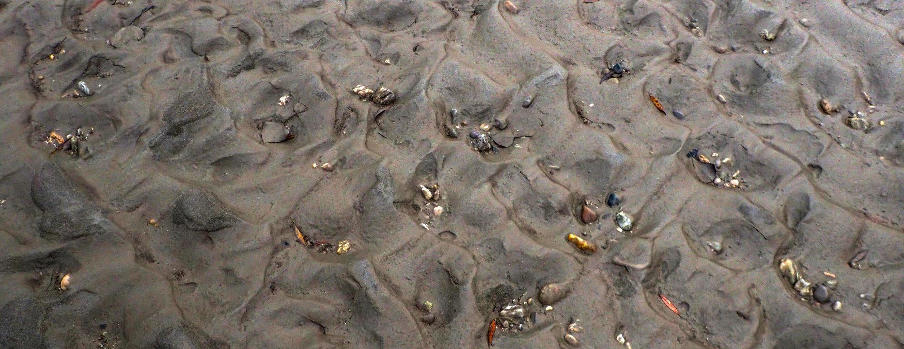
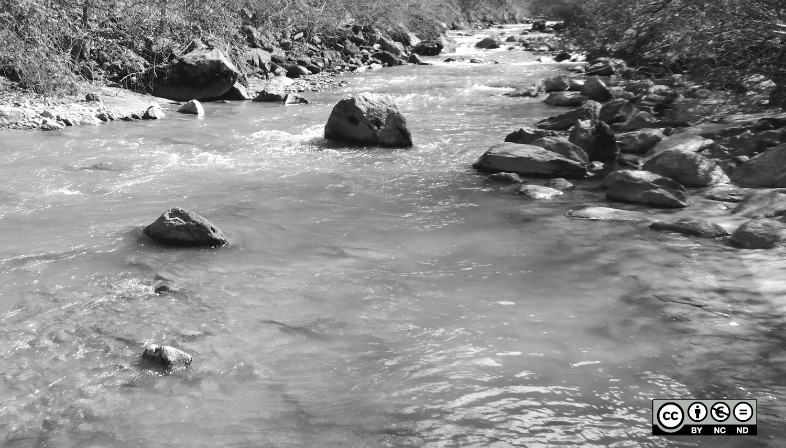
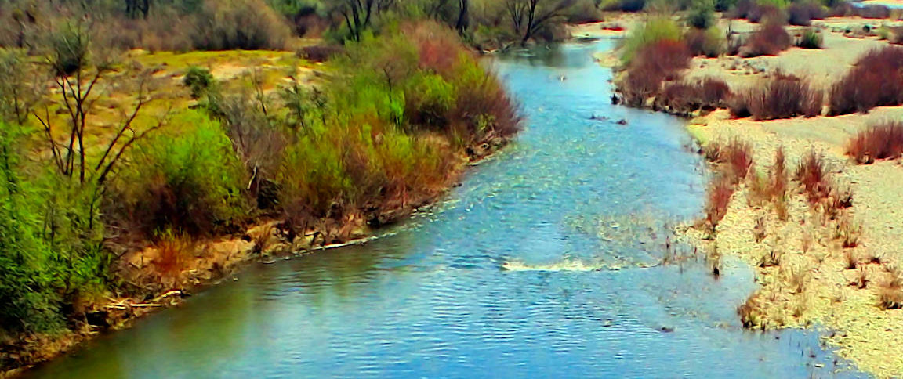
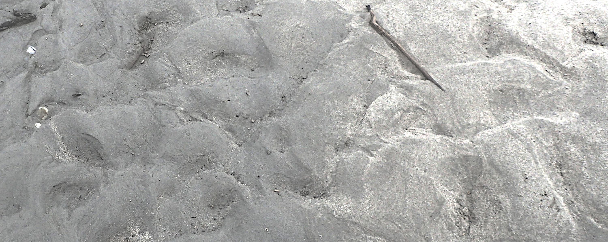
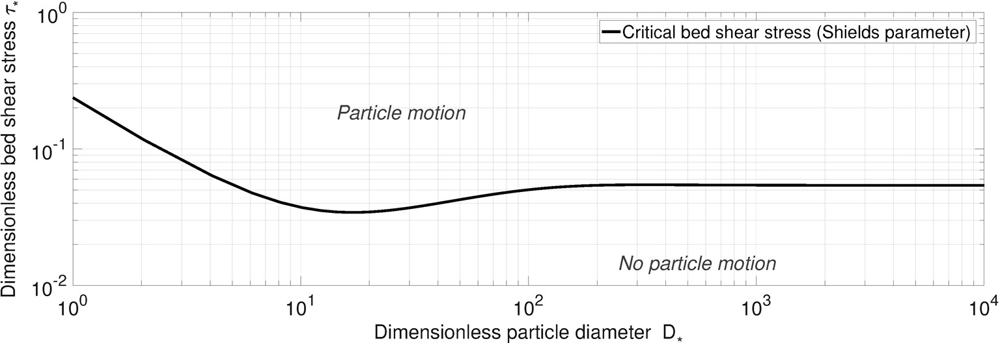

This section provides a glossary with technical terms recurring in this eBook. While it is intended to be as exhaustive as possible, some terms might not yet be defined.
Advection is the motion of particles along with the bulk flow. The properties (e.g., heat) of an advected particle or substance are conserved. Mathematically, advection of incompressible fluids (e.g., water) is described by the Continuity equation[KC08].
An anabranched river (section) is characterized by one or more side channels diverting from the main river stem. Anabranching (or also anastomosing) channels occur primarily in alluvial channel beds where more sediment is available than the water runoff can transport (transport capacity-limited rivers). Thus, an anabranching river has high sediment loads and channel avulsion is likely to occur during floods [HN07, NK96, RPLV17]. This eBook shows an example for an anabranching river section in the morphdynamic modeling tutorial in Fig. 194.
The American Standard Code for Information Interchange (ASCII) is an encoding standard for text on computers. The development of ASCII goes back to telegraphy and was first published in 1961 for the Latin alphabet. It was later extended by other alphabets and special characters [Mac80]. ASCII code represents characters in the form of numbers. For instance, the ASCII code 65 represents uppercase A (utf-8 encoding). In Python applications, ASCII code numbers can be useful to iterate through the alphabet (e.g., alphabetic column names), where chr(ASCII) returns a letter as a function of the system encoding. For instance, in Python, print(chr(78)) returns uppercase N for utf-8 encoding (default on many Linux systems). To find out the encoding type of your Python installation, open a Python terminal, tap importsys and sys.getdefaultencoding().
Bedload (also referred to as bed load) \(Q_b\) (or \(q_b\) for unit bedload) in kg\(\cdot\)s\(^{-1}\) (or kg\(\cdot\)s\(^{-1}\cdot\)m\(^{-1}\)) is a special type of Sediment transport describing the displacement of coarse particles by rolling, sliding, and/or jumping on the riverbed. In river hydraulics, the so-called dimensionless bed shear stress or also referred to as Shields parameter[Shi36] is often used as the threshold value for the mobilization of sediment from the riverbed. The dimensionless expression of bedload transport is [Ein50]:
\[
\Phi_b = \frac{q_b}{\rho_{w} \sqrt{(s - 1) g D^{3}_{pq}}} \approx \frac{Q_b}{0.5\cdot(b + B)\rho_{w} \sqrt{(s - 1) g D^{3}_{pq}}}
\]
where \(\rho_{w}\) is the density of water; \(s\) is the ratio of sediment grain and water density (typically 2.68) [Sch17]; \(g\) is gravitational acceleration; \(D_{pq}\) is the grain diameter of which \(pq \%\) of the mixture are finer; and \(b\) and \(B\) are the channel bottom and surface width, respectively (or cell width/height in a 2d numerical model).
The Boussinesq approximation of the Continuity equation assumes that density variations can be neglected except for the gravity term (i.e., in the vertical momentum equations). In addition, the Boussinesq approximation assumes that a fluid is incompressible and that wave motion is inviscid [Bou77, SV60]. Caution: not to be confused with the Boussinesq hypothesis.
French: approximation de Boussinesq German: Boussinesq-Approximation
The Boussinesq hypothesis states that the turbulent stresses are related to the mean velocity gradients in a similar way as the viscous stresses are related to the total velocity gradients [GD17]. In practice, the Boussinesq hypothesis corresponds to the assumption that the momentum transfer caused by turbulent eddies can be modeled with an eddy viscosity, which is important, for example, for turbulence terminations (e.g., in RANS models) [Bou77, Sch07]. Caution: not to be confused with the Boussinesq approximation.
French: hypothèse de Boussinesq German: Näherung von Boussinesq
A braiding river morphology refers to anabranched channel networks with high bedload supply, mostly located in moderately steep mid-land to mountain rivers [LW57, Ros94].

Fig. 260 A braided-channel section of the Devolli River (Albania). Source: Sebastian Schwindt (2021)#
French: en tresse German: Geflecht- bzw. Zopfausbildung (?)
In the field of hydrodynamics, the abbreviation CFL commonly refers to the Courant-Friedrichs-Lewy condition, which represents a convergence criterion for the numerical solution to the Navier-Stokes partial differential equations. The CFL applies to explicit time integration schemes that may become unstable for large time steps as a function of the size of mesh cells. Today, most numerical software uses an internal value for the CFL to adaptively calculate the maximum time step that is required for the stability of explicit solvers. In 2d modelling, the CFL condition is defined as \(c_{cfl}={u_x \cdot \Delta t}/\Delta x + {u_y \cdot \Delta t}/\Delta y\), where \(\Delta t\) is the time step, \(\Delta x\) and \(\Delta y\) are grid cell sizes in \(x\) and \(y\) directions of the coordinate reference system, and \(u_x\) and \(u_y\) are the flow velocities in the \(x\) and \(y\) directions. An explicit solver is assumed to be stable when \(c_{cfl} \leq c_{cfl, crit}\), where the critical value \(c_{cfl, crit}\) for the CFL condition must be smaller than 1.0. To this end, numerical modelling software, such as BASEMENT, uses a default value of \(c_{cfl, crit} = 0.9\).
Riverbed clogging describes the sedimentation of the porous coarse sediment matrix of the hyporheic zone under and along gravel-cobble-bed rivers. We differentiate between external and internal clogging: external clogging affects surficial layers and is a direct consequence of the deposition of fine, cohesive sediment; internal clogging occurs in deeper layers of the hyporheic zone and is the consequence of spontaneous percolation or grain sorting at the surface [BR87, Sch92].

Fig. 261 Example of outer riverbed clogging of a coarse sediment matrix with fine muddy sediment. Picture: Sebastian Schwindt (2021).#
The differential form of the continuity equation is \(\frac{\partial \psi}{\partial t}+\mathbf{u} \cdot \nabla \psi = 0\) where \(\psi\) is a constant of the particle/substance in consideration and \(\mathbf{u}\) is the fluid velocity vector. The \(\nabla\) operator is literally a vector of partial differential operators \(\frac{\partial}{\partial x_i}\) where \(x_i\) refers to the dimensions of the flow field. In the case of steady flow (no variability in time) the advection equation becomes \(\mathbf{u} \cdot \nabla \psi = 0\)[KC08].
The mass continuity equation of an incompressible fluid, such as water, considers the constant \(\Psi\) as a mass and has the form \(\nabla \cdot \mathbf{u} = 0\) or \(\frac{\partial u_i}{\partial x_i} = 0\)[KC08].
French: Équation de continuité German: Kontinuitätsgleichung
Convection encompasses Advection and Diffusion[KC08]. Thus, convection is fluid motion because of bulk transport (water flowing in a river with reference to Advection) and dispersion of a fluid component from high-density to low-density regions (Diffusion) in the flow field (e.g., an ink drop dispersing in a river).
A Coordinate Reference System (CRS), also referred to as Spatial Reference System (SRS), is an orientation unit system to geographically locate objects in a map. The CRS involves an origin (\(x\)=0.0 and \(y\)=0.0) and a projection. Objects of one map can be put into another map through the transformation of their CRS with respect to the coordinates and the projection. Read more about CRS in the section on Projections and Coordinate Systems.
French: Système de coordonnées German: Koordinatenreferenzsystem / Koordinatenbezugsystem (KBS)
The Comma-Separated Values (CSV) file format describes the structure of a text file storing simply structured data. The file name extension is *.csv, which may also contain Tab-Separated Values (TSV). The separator (i.e., comma, semicolon, or tab) sign delimits (or separates) colon values in one line of a *.csv file. Spreadsheet software, such as Libre Office Calc, enables to import and process *.csv files for cell-formula based data analyses.
A Digital Elevation Model (DEM) represents the bare Earth’s topographic surface excluding objects such as buildings or trees. In contrast, a Digital Surface Model (DSM) includes objects such as trees or buildings. In addition, a Digital Terrain Model (DTM) represents similar data to a DEM and both DEM and DTM can be used synonymously in many regions of the world. However, in the United States, a DTM refers to a Vector (regularly spaced points) dataset while a DEM is a Gridded Cell (Raster) Data dataset. The translation into other languages does not go along with the same definition of a DEM, DSM, and DTM, and the following translations refer to the English definitions rather than the same (translated) words.
French for DSM: Modèle numérique d’élévation (MNE) German for DSM: Digitales Höhenmodell (DHM)
French for DEM: Modèle numérique de terrain (MNT) German for DEM: Digitales Oberflächenmodell (DOM)
French for DTM: Modèle numérique d’élévation (MNE) German for DTM: Digitales Geländemodell (DGM)
Ultimately, there are many options for correct DEM-terminology depending on the region where you are. Now, what is the correct term in which language? There is no universal answer to this question and a good choice is to be patient with the communication partner.
Diadromous fish guilds migrate between the sea and freshwater in their life cycle, as opposed to potamodromous fish that only migrates in freshwater regions. Within diadromous fish guilds, further distinction is made between sub-guilds [Mye49]:
Anadromous fish live in the seas and migrate to freshwaters, mainly for reproduction. Examples for anadromous fish are sea trout (Salmo trutta trutta) or Pacific salmon (Oncorhynchus).
Catadromous fish live in freshwaters and migrate to the sea for reproduction. An example for catadromous fish is American eel (Anguilla rostrata).
Amphidromous fish migrate regularly between the sea and freshwaters. An example for amphidromous fish is round goby (Neogobius melanostomus) [LSK+19].
Diffusion is the result of random motion of particles, driven by differences in concentration (e.g., dissipation of highly concentrated particles towards regions of low concentration). Mathematically, diffusion is described by \(\frac{\partial \psi}{\partial t} = \nabla \cdot (D \nabla \psi)\) where \(\psi\) is a constant of the particle/substance in consideration; \(D\) is a diffusion coefficient (or diffusivity) in m\(^2\)/s, which is a proportionality constant between molecular flux and the gradient of a substance (or species). The \(\nabla\) (nabla) operator is a vector of partial differentials \(\frac{\partial}{\partial x_i}\) where \(x_i\) refers to the dimensions of the flow field [KC08].
The dimensionless bed shear stress \(\tau_x\) (in the literature often called \(\theta\)) is derived from the shear forces that act on the riverbed as a result of flowing water. \(\tau_x\) is a key parameter in the calculation of bedload transport where many semi-empiric equations assume that a sediment grain is mobile when a particle size-related, critical value of the dimensionless bed shear stress is exceeded. This critical value of dimensionless bed shear stress is also referred to as Shields parameter. To this end, \(\tau_x\) is calculated based on hydraulic characteristics and the characteristic grain size \(D_{pq}\)[Kra32, VK30]:
\[
\tau_{x} = \frac{\rho_w \cdot g \cdot R_h \cdot S_e}{\rho_w \cdot g \cdot \left(s-1\right) \cdot D_{pq}}
\]
where \(R_h\) is the hydraulic radius (cf. calculation in the 1d hydraulic Python exercise); \(S_{e}\) is energy slope; and \(s\) is the ratio of sediment grain and water density (typically 2.68) [Sch17]. \(R_h\) may be substituted by water depth in wide rivers with monotonous cross-sectional shape and for (grid) cells of a 2d numerical model. The terms \(\rho_w\) (water density) and \(g\) (gravitational acceleration) cancel in the nominator and denominator, and are provided here to make clear that the nominator essentially is (dimensional) bed shear stress.
A Dirichlet boundary condition (after Johann Peter Gustav Lejeune Dirichlet) prescribes values for the solutions of ordinary or partial differential equations at the boundaries (i.e., outer edges) of a (numerical) model. This is why Dirichlet boundary conditions are also called first-order boundary conditions. In contrast, a second-order Neumann boundary condition prescribes values for the derivatives of ordinary or partial differential equations [KC08].
French: Condition aux limites de Dirichlet German: Dirichlet-Randbedingung
An echo sounder emits an acoustic signal under water, which is reflected by the objects of the underwater landscape. Echo sounding is an active Sonar technique and enables the creation of an underwater DEM, which is also referred to as bathymetry. To perform echo sounding a probe must be installed on a boat that requires a minimum navigable water depth. In addition, the use of the echo sounder (probe) itself also requires a minimum water depth to operate with little noise inference. Therefore, by experience, a minimum water depth of 1-2 m is necessary to survey the bathymetry of a river by echo sounding. Echo sounding can be performed with single-beam (one underwater spot) or multi-beam (underwater surface) devices.
The Exner [Exn25] equation yields sediment mass conservation in a hydro-morphodynamic model (see also the TELEMAC-Gaia tutorial) and expresses that the time-dependent Topographic change rate \(\frac{\partial \eta}{\partial t}\) equals the unit sediment (bedload) fluxes \(q_b\) over the boundaries [BRP03, Hir71]:
where \(\epsilon\) is the porosity of the active transport (riverbed) layer, and \(\eta\) is the thickness of the active (riverbed) transport layer.
TELEMAC-Gaia uses a mass-conservative form of the Exner equation
TELEMAC’s morphodynamics module Gaia uses a vertical integral of a mass transport vector \(\boldsymbol{q_b}\) in the Exner equation, which accounts for the sediment grain density \(\rho_s\):
The \(\nabla\) operator is a vector of partial differentials \(\frac{\partial}{\partial x_i}\) where \(x_i\) refers to the dimensions of the flow field [KC08]. The unit bedload transport vector \(\boldsymbol{q_b}\) is composed of an \(x\) and a \(y\) component:
The Froude number \(Fr\) is the ratio between inertia and gravity forces and it is a key number of wave propagation. Thus, \(Fr\) states whether information can be transmitted in upstream direction or not [Cho59, Hag10, HS09]:
The Georeferenced Tag Image File Format (GeoTIFF) links geographic positions to Gridded Cell (Raster) Data images. A GeoTIFF involves multiple files containing the tagged image itself (*.tif file), a world file (*.tfw file) containing information about the geographic reference and projection system, and potentially an *.ovr file that links the GeoTIFF with other resource data. Read more at the Open Geospatial Consortium’s standard for GeoTIFF.
Geomorphic heterogeneity describes the spatial pattern of gemorphic units (e.g., Riffle pool) within the River corridor. It describes the non-uniformity of a river compared with a monotonous trapezoidal or rectangular artificial channel [Woh22].
An ecological guild describes a group of species that share common ecosystem resources. Species in a guild are not necessarily related to each other, nor do they necessarily use similar ecological niches. The term guild was introduced by Root [Roo67] and is used in ecohydraulics to describe (physical) habitat preferences of fish species and their lifestages. For instance, we may differentiate between reophilic and limnophilous fish guilds. In addition, we can distinguish between fish spawning guilds, and potamodromous, oceanmodromous and diadromous migration guilds.
The Hierarchical Data Format (HDF) provides the *.h5 (HDF4) and *.h5 (HDF5) file formats that store large datasets in an organized manner. HDF is often used with high-performance computing (HPC) applications, such as numerical models, to store large amounts of data output. This eBook impinges on HDF datasets in the BASEMENT tutorial where xdmf files represent the model output, and in the TELEMAC tutorials. In particular, Telemac builds on mesh and boundary files of the EnSim Core that is described in the user manual of the pre- and post-processing software Blue KenueTM (the newest Blue Kenue installer contains an updated version of the user manual). Understanding the HDF format significantly facilitates troubleshooting structural errors of computational meshes for numerical models.
The hyporheic zone is the space under and along rivers where surface water and groundwater exchange takes place. The exchange processes of a functional, non-clogged hyporheic zone are important for the ecosystem, in particular for fish spawning [BFM+98].
The Russian mathematician Andrey Nikolaevich Kolmogorov introduced the concept that the smallest scales of turbulence are similar for any turbulent flow (i.e. universal) [You83]. According to this concept, the so-called Kolmogorov microscales, the turbulent kinetic energy dissipates to heat when viscosity dominates. The Kolmogorov microscales can be calculated for length, time, and velocity units as a function of the kinematic viscosity \(\nu\), and the dissipation rate \(\epsilon\) of turbulent kinetic energy (per unit mass).
The Kolmogorov length scale \(\eta_L\) is calculated as follows, and typically is in the order of 0.1-10 m\(^{-3}\)[Dey14]:
Krylov (sub) spaces are used in numerical approximation schemes for finding solutions to sparse (many zero entries), high-dimensional linear systems [BH74]. To this end, Krylov (sub) space methods use Gaussian elimination (e.g., LU decomposition) to speed up calculations [Gut07].
French: Sous-espaces de Krylov / Méthode de la puissance itérée German: Krylowraum
The International Association for Hydro-Environment Engineering and Research (IAHR) is an independent non-profit organization that unites professionals in the field of water resources. The IAHR has multiple branches and publishes several journals in collaboration with external publishing companies. Read more about the IAHR at https://www.iahr.org.
Light Detection and Ranging (LiDAR or lidar) uses laser pulses to measure earth surface properties such as canopy or terrain elevation. The laser pulses are sent from a remote sensing platform (fix station or airborne) to surfaces, which reflect the pulses with different speed (time-of-flight informs about terrain elevation) and energy pattern (leaves behave differently than rock). In its raw form, lidar data is a point cloud with various, geo-referenced information about the reflected signal. Lidar point clouds for end users are typically stored in las format or compressed laz format. las-formatted data are much faster to process, but also much larger than laz-formatted data. For this reason, lidar data are preferably transferred in laz format, while the las format is preferably used for processing lidar data.
The term limnophile is used as a noun in reference to species that prefer to live in calm waters. Thus, limnophilous species, such as common rudd (Scardinius erythrophthalmus), colonize slow-flowing to stagnant fresh water regions. Unlike limnophilous species, reophilic species prefer fast flowing regions (see also Reophile).
A lower-upper (LU) decomposition applies to the solution of linear systems (matrices) by re-organizing a matrix of equations into an upper and a lower triangular matrix. Thus, LU decomposition is a form of Gaussian elimination, which is typically applied in numerical analysis (e.g., Telemac2d) or machine learning.
French: Décomposition LU German: LR Zerlegung (Gaußsches Eliminationsverfahren)
In computing, MPI stands for Message Passing Interface, which is a portable message passing standard. MPI is implemented in many open-source C, C++, and Fortran applications to enable parallel computing.
The general form of the Navier-Stokes equations describes the motion of a Newtonian fluid and expresses the conservation of mass and momentum [Bat00]. The Navier-Stokes equations is a special type of Continuity equation that is derived from Cauchy’s equation (conservation of momentum). The equation simplifies with the assumption of incompressible fluids and reduces to the Euler equation when viscous effects are negligible, which is generally the case in far distance from the boundaries [KC08].
A theoretical, exact solution of the Navier-Stokes equations would yield a perfect description of many natural processes. However, the underlying system equations involves more unknown parameters than equations. For this reason, rigorous simplifications (e.g., the Shallow water equations) and numerical approximations with considerably larger computational effort than for an analytical solution are necessary for the solution of the Navier-Stokes equations. Simplification hypotheses are, for example, a hydrostatic pressure distribution (leading to the shallow water equations) or the assumption that a fluid is incompressible.
Contemporary models predominantly use a specific form of the Navier-Stokes equations, notably the Reynolds-averaged Navier-Stokes (RANS) equations.
French: Équations de Navier-Stokes German: Navier-Stokes-Gleichungen
A Neumann boundary condition (after Carl Gottfried Neumann) prescribes values for the derivatives of ordinary or partial differential equations at the boundaries (i.e., outer edges) of a (numerical) model. This is why Neumann boundary conditions are also called second-order boundary conditions. In contrast, a first-order Dirichlet boundary condition prescribes values for the solutions of ordinary or partial differential equations [KC08].
French: Condition aux limites de Neumann German: Neumann-Randbedingung
Oceanodromous fish guilds exclusively live in oceans. while oceanodromous fish may encounter diadromous fish (migrate from the sea to freshwaters), they will very likely never meet potamodromous fish [Mye49]. Examples for oceanmodromous fish are Atlantic mackerels (Scomber scombrus) or Atlantic herring (Clupea harengus).
A plane bed refers to a type of riverbed that is characterized by irregular bedforms with distant, varying confinement, often in transition between transport capacity-limited and sediment supply-limited river sections [Sch17].

Fig. 262 Example of a plane bed river section at the Drance (VS, Switzerland). Picture: Sebastian Schwindt (2016).#
Potamodromous fish guilds live and migrate in freshwater regions. Their migration is mostly due to reproduction. The difference with diadromous fish is that those migrate from the sea to freshwater regions. In addition, potamodromous fish will very likely never meet oceanmodromous fish [Mye49]. Examples for potamodromous fish are eal (Anguilla anguilla) and river trout (Salmo trutta fario).
The Reynolds-averaged Navier-Stokes (RANS) equations are a statistical approximation of the Navier-Stokes equations to model turbulence with a time average and variance of velocity and pressure. Specifically, RANS solutions at coarse scales (i.e., coarser than Kolmogorov microscales) account for turbulence by replacing velocity \(u_k\) (and pressure) components by a mean value \(\overline{u_k}\) and fluctuations \(u'_k\) around this mean value [NMM+07]. The subscript \(_k\) indicates flow directions 1 (streamwise/longitudinal \(x\)-direction), 2 (lateral / \(y\)-direction), and 3 (vertical / \(z\)-direction). The RANS equations read as follows [FB15] for mass balance (Reynolds-averaged continuity equation):
where subscript \(_j\) is analogous to \(_k\), \(t\) denotes time, \(p\) is pressure, and \(\mu\) is the dynamic viscosity (of water). The terms I to X have the following meanings:
I local derivative of (time) averaged momentum
II local derivative of averaged momentum fluctuation
IV mean advection of momentum fluctuation (in \(_k\) direction)
V mean advection of momentum fluctuation (in \(_j\) direction)
VI averaged pressure
VII viscous diffusion
VIII Reynolds stress
IX turbulent diffusion (i.e., turbulent transport of momentum fluctuation)
X average body force / gravity
The orange-color terms involve density fluctuation, and thus, cancel out when using the Boussinesq approximation. In term VIII, \(\overline{u'_k u'_j}\) denotes the Reynolds stress tensor, which is an additional stress that results from Reynolds averaging, and poses a closure problem. To this end, the (in)famous \(k\)-\(\epsilon\) model is often used, where \(k\) denotes the turbulent kinetic energy and \(\epsilon\) its dissipation rate.
RANS solvers are computationally highly efficient but physically imprecise because they represent turbulence only as statistical moments [NMM+07]. For this reason, there is a growing trend in numerical modeling toward the use of so-called Large Eddy Simulations (LES), which can be used at high Reynolds numbers to precisely model large eddies and simulate smaller eddies with a fine structure model. A precise representation of turbulence was possible by means of Direct Numerical Simulation (DNS), which is currently and for the time being not computationally feasible for most free-surface waters [GP18].
French: Moyenne de Reynolds German: (Osborne) Reynolds-gemittelte Navier-Stokes-Gleichungen
The term reophile is used as a noun in reference to species that prefer to live in fast-flowing water. In addition, a distinction is made between reophilic A and B species. Reophilic A species (e.g., brown/river trout Salmo trutta (fario) or minnow Phoxinus phoxinus) colonize the main stream of a river at all lifestages. Reophilic B species (e.g., gudgeon Gobio gobio) occupy calmer flow regions (e.g., oxbows) in some lifestages. Unlike reophilic species, limnophilic species (e.g., common rudd Scardinius erythrophthalmus) prefer calm (stagnant) flow regions (see also Limnophile).
Where \(\nu\) denotes the kinematic viscosity (10\(^{-6}\) m\(^{2}\) s\(^{-1}\) for water at 20\(^{\circ}\)C). In gravel-cobble bed rivers, inertia forces are typically dominant compared with viscous forces; therefore \(Re\) is generally larger than 2000 and the flow is turbulent [Cho59, Woh00].
The proprietary Rich Text Format (RTF) wraps raw text in functional blocks that enable graphically flavored Word-like processors to identify document properties such as font size and type. Common RTFs are, for instance, docx or odf and enable exchanging text files between different Word-like processors on different operating systems.
Riffle-pool (or pool-riffle) sequences are a sequence of fast-flowing, shallow flow units and deeper, slower flowing units of a river, where the dimensions of one unit correspond approximately to one channel width [Lis79]. The maintenance of riffle-pool channels requires sufficient sediment supply during smaller floods and a velocity reversal when those floods occur [CGB+09].

Fig. 263 A pool-riffle sequence at the American River close to Sacramento (CA, USA). Source: Sebastian Schwindt (2018)#
The Rouse number \(Ro\) determines the transport mode (essentially, bedload or suspended load) of a sediment particle and it serves for calculation of the concentration profile of suspended sediment. In its function of a characteristic of a vertical suspended load profile and because of its original definition of an exponent in the suspended load function (see page 13ff in Rouse [Rou39]), the Rouse number is also referred to as with a capital \(Z\). It is calculated as:
A particle is typically transported in suspension when it has a low Rouse number (\(Ro \lessapprox 0.5\)), in the water column when it has a Rouse number between approximately 0.5 and 2.0, as bedload when its Rouse number is higher, and tends to deposit for very high Rouse numbers (\(Ro \gtrapprox 12\)) [DDC23].
The French mathematician Adhémar Jean Claude Barré de Saint-Venant introduced dimensional simplifications of the Navier-Stokes equations. For simple cross-sections, the one-dimensional (1d), cross-section averaged Saint-Venant equations can be applied, and represent the baseline for the Manning-Strickler Formula (cf. the 1d Hydraulics Python exercise). The two-dimensional (2d), depth-averaged Saint-Venant equations are more frequently referred to as the Shallow water equations, which imply a hydrostatic pressure distribution [GA11].
French: Équations (de Barré) de Saint-Venant German: Saint-Venant-Gleichungen
Sand bed rivers are characterized by the abundance of fine sediment and sand bars. Compared with a gravel bed, a sand bed tends to have higher suspended load. This type of morphology is often observed lowland and coastal regions where the the hypothetic energy grade is low is less intense than in steeper regions [Kle05, ZF94].

Fig. 264 Dune bedforms of a sand bed in a side channel of the Inn River in Bavaria, Germany. Source. Sebastian Schwindt (2022)#
Fluvial sediment transport encompasses two modes of particle displacement: (1) suspended load and (2) bedload (see figure below). Finer particles with a weight that can be carried by the fluid (water) are transported as Suspended load. Coarser particles rolling, sliding, and jumping on the channel bed are transported as bedload. There is third type of transport, the so-called wash load, which is finer than the coarse bed load, but too heavy (large) to be transported in suspension [Ein50]. The units for sediment transport are for an integral flow cross-section kg\(^3\cdot\)s\(^{-1}\) or per unit width kg\(^3\cdot\)s\(^{-1}\)m\(^{-1}\). Additionally, the Rouse number can be used to determine whether a particle is transported in suspension, as bedload, or not at all.
French: Transport solide German: Sedimenttransport
The settling velocity \(w_s\) is computed as a function of the ratio of sediment grain and water density \(s\), gravitational acceleration \(g\), grain size \(D_x\), and the dimensionless drag coefficient \(C_D\)[Dey14]:
In shallow (i.e., small water depths) and wide waters (many rivers), the assumption of hydrostatic pressure distribution can be made to simplify the Navier-Stokes equations. The corresponding simplified form of the Navier-Stokes equations is referred to as the shallow water equations. The shallow water equations imply that vertical flow velocity is negligible compared to horizontal (and longitudinal) flow velocity. This assumption is valid in many river systems, but there are several cases for which the shallow water equations are not suited [KC08].
For instance, the depth-averaged shallow water equations are not suited for any pressurized flows (e.g., at weirs or in pipes). This eBook recommends to use the shallow water equations only when the water depth is smaller than a 1/20 times the characteristic wavelength (e.g., flood waves or in tsunami/oceanic models) and when the water depth is smaller than 1/10 of the wetted channel width. The application of the shallow water equations is featured in this eBook with the tutorials on 2d numerical modeling (i.e., in the BASEMENT and Telemac2d chapters).
French: Équations (de Barré) de Saint-Venant German: Flachwassergleichungen
Shear velocity \(u_*\) (or friction velocity) expresses shear stress in units of velocity. The parameter is useful, for example, to describe the shear effect of depth-averaged flow velocity. It can be calculated as follows [Sch17]:
where \(\tau_b\) denotes the bed shear stress, \(rho_w\) is the density of water, \(R_h\) is the hydraulic radius (see also the 1d hydraulic Python exercise), \(g\) is gravitational acceleration, and \(S_{e}\) is energy slope. \(R_h\) may be substituted by water depth \(h\) in wide rivers with monotonous cross-sectional shape and for (grid) cells of a 2d numerical model.
French: Vitesse de frottement German: Schubspannungsgeschwindigkeit
The Shields [Shi36] parameter \(\tau_{x,cr}\) (in the literature also often named \(\theta_{cr}\)) is a dimensionless value of critical bed shear stress for sediment mobility. For this reason, the Shields parameter is also often referred to as dimensionless critical bed shear stress. Flow conditions and grain sizes with a dimensionless bed shear stress\(\tau_x\) smaller than the Shields parameter curve are considered immobile. Vice versa, flow conditions and grains associated with a dimensionless bed shear stress larger than the Shields parameter are considered mobile. In fully turbulent flow, the Shields parameter can be considered a constant value of approximately 0.047\(\pm\)0.15 [Kra32, SJ83, VK30]. To evaluate if a grain is in motion, its dimensionless bed shear stress value is plotted against its dimensionless diameter \(D_x\) in the so-called Shields diagram (also referred to as the Hunter-Rouse[Rou65] diagram). \(D_x\) is calculated for any grain with a diameter \(D_{pq}\) (in m) as [Ein50]:
where \(s\) is the ratio of sediment grain and water density (typically 2.68); \(g\) is gravitational acceleration; and \(\nu\) is the kinematic viscosity of water (\(\approx\)10\(^{-6}\)m\(^{2}\) s\(^{-1}\)) [Sch17]. Read the definition of dimensionless bed shear stress for the calculation of \(\tau_{x}\). Figure 265 shows the Shields diagram where the Shields curve is plotted based on descriptions in Guo [Guo02].

Fig. 265 The Shields parameter \(\tau_{x,cr}\) (critical dimensionless bed shear stress) for grain mobility as a function of the dimensionless particle diameter \(D_x\), according to Guo [Guo02] (image source: Schwindt [Sch17]).#
Beyond grain size and local hydrodynamics, \(\tau_{x,cr}\) is also a function of global channel roughness and slope, relative submergence and bedload transport intensity [Fer12, Gre08, LDV08, RFP+08, Wil93].
Different groups of fish (i.e., fish guilds) have different practices and preference for spawning their eggs. In ecohydraulics, a distinction is made, for instance, between fish guilds that prefer to build nests in the surface of the riverbed (lithophilous) or glue their eggs to sediment (psamnophilous) or plants (phytophilous). Also, pelagophilous fish release their eggs into the free-flowing water.
SMS (Surface-water Modeling System) is a proprietary software suite from Aquaveo for surface water modeling. 2dm file format is natively produced with SMS and represents a computational grid with x, y, and z coordinates of nodes along with node ids. The developer’s wiki provides a comprehensive description of the file format.
Sound navigation and ranging (Sonar) is a technique for locating objects in space and underwater by emitting sound pulses. An active Sonar system, such as radio detecting and ranging (radar), emits and receives sound signals to map objects underwater (time-of-flight measurement). Passive Sonar detects signals emitted by an object itself (e.g., vibrations from fish motion or Whale chant), but cannot accurately map underwater objects.
A stage-discharge relation (also referred to as rating curve) plots discharge (in m\(^3\)/s or CFS) as a function of water surface elevation function (in m above sea level or ft) at a specific river cross-section. Most stream gauging stations have a regularly calibrated stage-discharge relation that is often maintained by a state authority. This is why, it is mostly state authorities that provide stage-discharge functions for their gauging stations online, such as the state of Bavaria at the Mühldorf am Inn gauge.
French: Courbe d’étalonnage / Courbe hauteur-débit / Courbe de tarage German: Wasserstands-Abfluss Beziehung, bzw. Abflusskurve / Abflussschlüsselkurve / Eichkurve
Step pools are a type of morphological units, typically found in steep mountain rivers. They are characterized by high gradients (exceeding 2%) and a rough surface composed of cobble and bedrock [GONK08].
The Standard Tessellation Language (STL) file format is native to a three-dimensional (3d) printing CAD software type called stereolithography. An STL file describes 3d structures in the form of unstructured triangulated surfaces with arbitrary units.
The term Thalweg stems from old German spelling for valley (today: Tal) and should be more correctly referred to as Talweg. The literal translation of Talweg is valley path and originally refers to a line that longitudinally connects the lowest points of valley cross-section profiles. Geomorphologists sometimes use slightly different definitions of Talweg. International law is more explicit, referring to the Thalweg as the primary navigable channel at boarders between two countries.
Topographic change is the increase or decrease in elevation of the Earth’s surface as a function of time. Conceptually, tracking topographic changes could consist of a simple comparison (i.e., subtraction) of elevation changes at two different moments. However, topographic change detection is not quite that simple, since every measurement technique has spatial inaccuracies with regards to the exact location and elevation of recorded points. For this reason, methods have been developed that, based on a level of detection (LoD), generate topographic change maps conveying and accounting for spatial uncertainty. Depending on the method, either strict global LoD raster [PW17] or less strict pixel-based LoD values [WBDS10] are used to remove uncertainty from topographic change maps. Topographic change maps also enable the visualization of soil loss (i.e., erosion), which is a growing challenge for agriculture and beyond. To this end, the USGS developed a publicly available website that is dedicated to topographic change (visit https://usgs.gov).
Turbulence kinetic energy (TKE, or \(k\) in this eBook) is the mean kinetic energy per unit mass associated with turbulent eddies. It is measured as the quadratic velocity fluctuations. In a river or lab flume, TKE can be indirectly measured with an Acoustic Doppler Velocimeter (ADV) that enables to derive the streamwise (\(u_x\) or just \(u\)), later/spanwise (\(u_y\) or \(v\)), and vertical (\(u_z\) or \(w\)) velocity fluctuations (i.e., \(u'_x\), \(u'_y\), and \(u'_z\), respectively) with the following expression [KC08, NG98]:
In numerics, the TKE (\(k\)) is calculated by turbulence closure methods, such as the \(k\)-\(\epsilon\) closure, which are required for numerically solving the Reynolds-averaged Navier-Stokes equations.
The eXtensible Data Model and Format (XDMF) library provides standard routines for exchanging (scientific) datasets that result from high performance computing (HPC) tasks. XDMF files redundantly store light and heavy data in XML and HDF5 format and Python interfaces exist for both formats. Thus, XDMF or XMF files are often linked to a *.h4 or *.h5 (HDF) file that contains heavy simulation datasets.